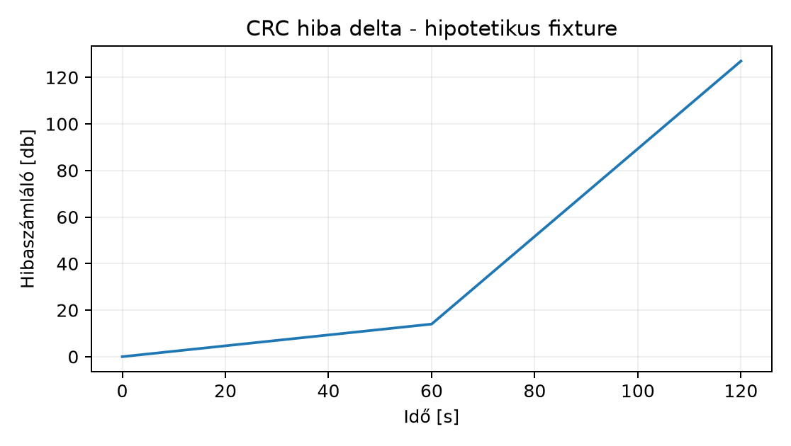

Egy szenior C++ fejlesztő a hálózati hibát gyakran az alkalmazás oldaláról látja: timeout, ismételt TCP kézfogás, nagy farok-latenciák. Ilyenkor a hibakeresés hasonlít egy profilozási feladathoz: nem elég a tünet, az okot a réteghez kötött bizonyítékkal kell alátámasztani. A Linux rendszerben a hálózati kártya (NIC) állapota, a PCI eszköz, a driver és a kernel netdev rétege külön-külön kérdezhető. Ez az alfejezet azt tanítja meg, hogyan állítsunk fel Layer-1/NIC hibakeresési tervet linkinventárból és hibaszámlálókból, hogyan kezeljük a virtualizált környezet korlátait, és hogyan dokumentáljuk a bizonyítékot a tényleges hardver hiányában is.
Linkinventár alatt egy hálózati interfész teljes, rétegezett leltárát értjük: a PCI eszköz azonosítóját és driverét, a netdev nevét, MAC-címét, MTU-ját, carrier állapotát, a kialkudott sebességet, duplex módot, FEC állapotot, ring buffer méreteket, interrupt és RSS beállításokat. A leltár minden eleme read-only módon gyűjthető, és a hibakeresés alapjául szolgál.
Layer-1/NIC hiba bizonyíték az a számláló- vagy állapotváltozás, amely a fizikai réteg (kábel, optika, transceiver, port) vagy a NIC belső hibájára utal. Ilyen például a CRC-hiba növekedése, a carrier drop, a FEC korrigálhatatlan hiba, vagy a fényteljesítmény csökkenése.
Fixtúra olyan, pontosan megjelölt bemeneti adat, amely valós hardver hiányában egy switch port, fizikai NIC vagy transceiver számlálóit reprezentálja. A fixtúra soha nem „mért” adat, hanem hipotetikus, jól dokumentált forrás, amelyen a diagnosztikai eljárás reprodukálhatóan gyakorolható.
A munkamódszer mindig ugyanaz: először snapshot, utána delta, végül kontrollált változtatás. A read-only inventory nem változtatja az interfészt, ezért biztonságos első lépés. A hibaszámlálókat időben kétszer kell leolvasni, mert a boot óta gyűjtött abszolút értékek önmagukban félrevezetők. Egy kábel- vagy portcserét csak a delta trend birtokában, egyetlen változóra korlátozva végezzünk.
A Linux három nézete ugyanahhoz az interfészhez:
0000:01:00.0 Ethernet controller: Intel Corporation Ethernet Controller X710 ....
A -k kapcsolóval a kötött kernel drivert is látjuk.A kapcsolat tipikusan: PCI eszköz → kernel driver → netdev. A
lspci-ben látott bus:device.function az a cím, amelyen a
driver regisztrál. Az ip link az interfész nevét köti a
netdevhez, a ethtool pedig a netdev mögötti driverhez
beszél. Ha például a lspci mutatja az eszközt, de az
ip link nem mutat interfészt, akkor a driver nem kötött be,
vagy a kernel nem hozta létre a netdevet. Ha az ip link
mutatja az interfészt, de a ethtool nem fut, akkor a driver
nem támogatja az ethtool API-t. A három réteg együttes vizsgálata nélkül
a hiba helye nem dönthető el.
A negotiated speed a link partner (switch port,
másik végpont) és a NIC által közösen elfogadott sebesség. Az
auto-negotiation során a két oldal a hirdetett képességek metszetét
választja. A ethtool enp1s0 kimenetében szerepel:
Supported link modes: a NIC által támogatott
módok.Advertised link modes: amit a NIC hirdet.Link partner advertised link modes: amit a másik oldal
hirdet.Speed és Duplex: a ténylegesen kialkudott
érték.Ha egy 10G-os SFP+ optikát 1G-os switch porthoz csatlakoztatnak, a negotiated speed 1G lesz, mert a partner nem hirdeti a 10G-ot. A half duplex szinte mindig hibára utal modern Ethernetben: collision domain, régi hub, vagy hibás auto-negotiation.
A FEC (Forward Error Correction) a nagy sebességű
linkeken az átviteli hibák javítását szolgálja. A
ethtool -S kimenetében a fec_corrected a
javított, a fec_uncorrected a nem javítható hibákat
mutatja. A korrigálható hibák növekedése a jel minőségének romlására
utal, a korrigálhatatlan hibák már tényleges frame-vesztést okoznak.
Az error trend a delta, nem az abszolút érték. Például:
sudo ethtool -S enp1s0 | grep -E 'crc|carrier|fec|fifo|missed|abort'A kimenetből a rx_crc_errors,
rx_fifo_errors, rx_missed_errors,
tx_aborted_errors, tx_carrier_errors,
rx_frame_errors értékeket kell figyelni. Az egyszeri csúcs
nem bizonyíték; a két mérés közötti növekedés viszont igen. A trendhez
rögzítsük az időbélyeget és a delta értékeket.
Hipotetikus fixtúra-alapú hibaszámláló-trend:

| Idő [s] | CRC errors | Delta |
|---|---|---|
| 0 | 0 | 0 |
| 60 | 14 | 14 |
| 120 | 127 | 113 |
A fenti adat hipotetikus fixtúra; a gyorsuló delta a fizikai réteg hibájára utal.
A labor célja egy lab-host-1 nevű Ubuntu 24.04-es VM
virtuális interfészének felmérése, valamint egy hipotetikus fizikai
switch port fixtúrájának elemzése. A parancsok a labuser
felhasználóval futnak, a sudo root jogosultságot ad a
read-only ethtool lekérdezéshez is.
1. lépés: PCI eszköz és driver azonosítása
sudo lspci -nnk -s 0000:01:00.0
ip -details link show enp1s0Várt kimenet (illusztratív, VM):
0000:01:00.0 Ethernet controller [0200]: Red Hat, Inc. Virtio network device [1af4:1000]
Subsystem: Red Hat, Inc. Virtio network device [1af4:1000]
Kernel driver in use: virtio-pci
Kernel modules: virtio_pciAz ip -details link kimenetében a state UP,
LOWER_UP, mtu 1500, és
gso_max_size 65536 látható.
2. lépés: negotiated speed, duplex, offload
sudo ethtool enp1s0
sudo ethtool -k enp1s0Várt kimenet (illusztratív, virtuális NIC):
Speed: Unknown!
Duplex: Unknown! (255)
Auto-negotiation: off
Link detected: yesEz a virtuális korlát, nem fizikai hiba. A
tx-tcp-segmentation: on jelzi, hogy a TSO offload
aktív.
3. lépés: hibaszámlálók snapshotja
sudo ethtool -S enp1s0 | grep -E 'crc|carrier|fec|fifo|missed|abort|drop'Várt kimenet (illusztratív): a virtuális NIC esetén kicsi vagy üres számlálók; a fizikai NIC-en a fent elemzett értékek.
4. lépés: fizikai switch port fixtúra elemzése
Mivel a VM nem látja a fizikai kábelt, a Layer-1 diagnosztikát a következő hipotetikus fixtúrával gyakoroljuk:
{
"port": "Te1/0/1",
"host": "lab-physical-host-1",
"timestamps": ["2025-01-01T10:00:00Z", "2025-01-01T10:02:00Z"],
"carrier": [true, true],
"speed_mbps": [10000, 10000],
"duplex": ["full", "full"],
"fec_mode": ["rs-fec", "rs-fec"],
"crc_errors": [0, 127],
"fec_corrected": [10, 1040],
"fec_uncorrected": [0, 31],
"link_transitions": [0, 0],
"temperature_c": [38.2, 43.1],
"receive_power_dbm": [-1.2, -4.9]
}A jq segítségével a delta számolható:
jq '.crc_errors[1] - .crc_errors[0], .fec_uncorrected[1] - .fec_uncorrected[0], .receive_power_dbm[1] - .receive_power_dbm[0]' lab-switch-port.jsonVárt kimenet (illusztratív, a fixtúrából):
127
31
-3.7Az értelmezés: a carrier stabil (link_transitions 0), a
sebesség 10G full duplex, tehát nem kábelezési sebességprobléma. A CRC
hibák 2 perc alatt 127-tel nőnek, a FEC korrigálhatatlan hibák 31-gyel,
a fényteljesítmény 3,7 dBm-mel csökken, a hőmérséklet 4,9 °C-kal nő. Ez
a transceiver túlmelegedésére vagy a csatlakozó elszennyeződésére
utal.
A kontrollált csere sorrendje:
Mindig egy változó változik, és minden csere után legalább 2 perces steady-state trendet mérünk.
A tcpdump a kernelben a NIC offload
előtti csomagokat látja. Emiatt a kimenő forgalomban a
TSO/GSO miatt a capture-ben „jumbo” méretű TCP szegmensek jelenhetnek
meg, amelyek nagyobbak az MTU-nál. Ez nem MTU hiba, hanem az offload
hatása. A ethtool -k mutatja az offload állapotot.
Egy ellenpróba során ideiglenesen kikapcsolhatjuk a TSO-t:
sudo ethtool -K enp1s0 tx offEkkor a tcpdump már MTU méretű szegmenseket mutat, mert
a kernel a szoftveres szegmentálást végzi. A művelet módosítja az
interfész állapotát, ezért csak laborban, előfeltétel után szabad
futtatni. Visszaállítás:
sudo ethtool -K enp1s0 tx onA capture tehát nem a wire formátumot mutatja, hanem a kernel és a NIC közötti képet, ami az offload beállítás függvényében eltér. A hibakeresésnél ezt mindig dokumentálni kell.
A nagy throughputú fizikai rendszerekben a teljesítményt az is meghatározza, hogy a NIC interruptjai melyik CPU-n futnak, és a DMA-műveletek melyik NUMA node memóriáját érik el. A lab virtuális NIC esetén ez korlátozottan látszik, de a módszer azonos.
A NUMA node lekérdezése:
cat /sys/class/net/enp1s0/device/numa_nodeAz IRQ affinitás a /proc/interrupts
fájlból olvasható:
grep enp1s0 /proc/interruptsA kimenet minden CPU-ra mutatja a megszakítások számát. Az affinitás:
for irq in $(grep enp1s0 /proc/interrupts | awk '{print $1}' | tr -d ':'); do
echo "IRQ $irq: $(cat /proc/irq/$irq/smp_affinity_list)"
doneAz RSS (Receive Side Scaling) a bejövő csomagokat több várakozási sorba osztja, és az indirection table határozza meg, melyik CPU melyik queue-t szolgálja ki:
sudo ethtool -L enp1s0 combined 4
sudo ethtool -X enp1s0 equal 4
sudo ethtool -S enp1s0 | grep -E 'rx_queue_[0-9]+_packets'Ha a NIC NUMA node 0-hoz tartozik, de az IRQ-k a node 1 CPU-n futnak, a DMA-memória távoli node-ról érkezik, ami a memóriahierarchia alfejezeteiben tárgyalt elvekkel összhangban extra késleltetést okoz. A laborban ezt a topológiát fel kell mérni, és a diagnosztikában rögzíteni.
„Speed: Unknown!”, tehát a Layer-1 hibás.”
Ez a virtuális NIC sajátossága. Ellenpróba: fizikai NIC-en a
Speed mező konkrét értéket ad; VM-ben a fizikai port
állapotát a hypervisor hoszton vagy a switch porton kell nézni.
Egyetlen ethtool -S leolvasás alapján
döntés.
A számlálók a boot óta gyűlnek. Ellenpróba: két időpont közötti delta
rögzítése, legalább 60–120 másodperces ablakkal.
A tcpdump jumbo csomagot mutat, ezért MTU
hiba.
A TSO/GSO offload miatt a capture a NIC előtti képet mutatja.
Ellenpróba: ethtool -k ellenőrzése, majd TSO ideiglenes
kikapcsolása és ismételt capture.
Kábelcsere diagnózis nélkül.
A csere maga változtatás, nem bizonyíték. Ellenpróba: a csere előtt
trendet mérünk, a cserét egyetlen változóra korlátozzuk, majd ugyanazzal
a mérési eljárással értékelünk.
A laborban a fixtúrát valós mérésként
kezelni.
A hipotetikus fixtúra csak a diagnosztikai eljárás gyakorlására szolgál;
a döntést valós adatok hiányában „feltételezés” státusszal kell
jelölni.
Készíts linkinventárt a lab-host-1 VM
enp1s0 interfészéről. Gyűjtsd össze a következőket: PCI
bus:device.function, driver, MAC, MTU, carrier, speed, duplex, offload
állapot. A kimenetet mentsd lab-net-inventory.txt néven. A
fájl végén rögzítsd, hogy a Speed és Duplex
mezők a virtuális NIC korlátja miatt miért nem a fizikai kábel állapotát
mutatják.
A fenti lab-switch-port.json fixtúra alapján számítsd ki
a CRC, FEC-korrigálatlan és fényteljesítmény deltákat. Készíts Markdown
táblázatot a mért (fixtúra) értékekkel és a deltákkal. Azonosítsd a
legvalószínűbb hibás komponenst, és írd le a kontrollált csere
sorrendjét, indoklással.
Dokumentáld az enp1s0 offload állapotát, az IRQ
affinitást és a NUMA node-ot. Kapcsold ki ideiglenesen a TSO-t, futtass
egy tcpdump capture-t egy rövid HTTP-kérés alatt, majd
állítsd vissza az eredeti állapotot. Hasonlítsd össze a capture-ben
látott csomagméretet a TSO bekapcsolt állapotával, és magyarázd a
különbséget.
A feladat megoldása:
sudo lspci -nnk -s 0000:01:00.0 > lab-net-inventory.txt
ip -details link show enp1s0 >> lab-net-inventory.txt
sudo ethtool enp1s0 >> lab-net-inventory.txt
sudo ethtool -k enp1s0 >> lab-net-inventory.txt
cat <<EOF >> lab-net-inventory.txt
VM_LIMIT_REMARK: A virtuális NIC (virtio-pci) esetén a Speed és Duplex
mezők nem a fizikai kábel állapotát tükrözik; a fizikai Layer-1
diagnosztikához a hypervisor hoszt vagy a switch port adata szükséges.
EOFPostcondition: a lab-net-inventory.txt fájl létezik, és
tartalmazza a kért adatokat, valamint a korlátot.
A delta számítás:
jq -r '"CRC delta: \(.crc_errors[1] - .crc_errors[0])", "FEC uncorrected delta: \(.fec_uncorrected[1] - .fec_uncorrected[0])", "Receive power delta: \(.receive_power_dbm[1] - .receive_power_dbm[0])"' lab-switch-port.json| Mérőszám | 0. időpont | 2 perc után | Delta |
|---|---|---|---|
| CRC errors | 0 | 127 | +127 |
| FEC uncorrected | 0 | 31 | +31 |
| Receive power [dBm] | -1.2 | -4.9 | -3.7 |
| Temperature [°C] | 38.2 | 43.1 | +4.9 |
Postcondition: a táblázat elkészült, a legvalószínűbb hiba a transceiver/csatlakozó, a csere sorrendje indokolt: először csatlakozó-tisztítás, majd transceiver, végül port.
Az offload állapot:
sudo ethtool -k enp1s0 | grep tx-tcp-segmentation
cat /sys/class/net/enp1s0/device/numa_node
grep enp1s0 /proc/interruptsA TSO kikapcsolása, capture, visszaállítás:
sudo ethtool -K enp1s0 tx off
sudo tcpdump -i enp1s0 -c 20 -w lab-tso-off.pcap tcp port 80 &
curl http://example.com/ >/dev/null
sudo ethtool -K enp1s0 tx onA tcpdump kimenete a TSO off állapotban MTU méretű
szegmenseket mutat, míg TSO on állapotban nagyobb szegmenseket. A
magyarázat: a capture a kernel és a NIC közötti képet rögzíti, nem a
wire formátumot.
Postcondition: az offload állapot visszaállt az eredeti
tx on értékre; a capture fájl mentve lett; az IRQ/NUMA adat
dokumentált.
A fizikai és NIC-diagnosztikai labor a hálózati réteghiba
bizonyítékgyűjtését tanítja. A lspci, ip link
és ethtool három rétege együttesen azonosítja a PCI
eszközt, a netdevet és a driver-specifikus állapotot. A negotiated
speed, duplex, FEC és hibaszámlálók trendje dönti el, hogy a hiba
Layer-1 vagy magasabb rétegben van. A virtuális NIC korlátai miatt a
fizikai adatokat fixtúrával helyettesítjük, amit soha nem nevezünk
mérésnek. A kontrollált csere során egy változó változik, és a
diagnózist delta alapján igazoljuk.
Továbbhasznált definíciók:
Forrás kiindulópontok, amelyeket ebben a kérésben nem ellenőriztünk, ezért nem állítjuk, hogy olvastuk őket:
Ellenőrzési hiányok: a ethtool kimeneti mezők pontos
neve driverenként és gyártói eszközönként eltérhet; a fizikai switch
port, transceiver és optika típusa, valamint a tényleges
ethtool -m kimenet a laborban ellenőrizendő. A használt
fixtúra hipotetikus, nem mért. A virtuális NIC limitációját a hypervisor
és a fizikai hoszt topológiájának ismeretében kell validálni.